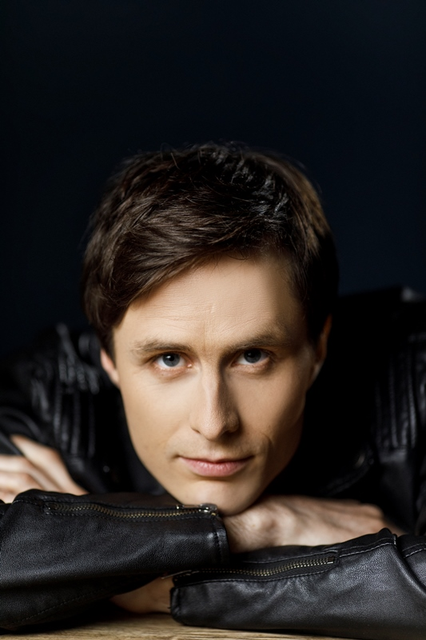

{kind=link}
Jums teko išgirsti, kad jūs arba jūsų vaikai paveldėjo blogą regėjimą, kad akinius reikės nešioti visą gyvenimą? Regėjimo gerinimo natūraliais būdais stovyklų ir pratybų lektorius M. Mitkevičius (29 m.) tikina, kad regėjimas gali ne tik blogėti, bet ir gerėti, o akinių tam visiškai nereikia.
Programuotojas Mindaugas Mitkevičius, kažkada nešiojęs –4 dioptrijų stiprumo akinius, per porą metų sugebėjo susigrąžinti gerą regėjimą natūraliais būdais. „Dažnai žmonės sako, kad be akinių nieko nemato ir negali atlikti įprastų kasdienių veiklų, ypač jei šie stipresni. Bet tai tik susikurta idėja galvoje. Svarbu prisijaukinti akis, pradėti jomis pasitikėti ir ryškesnis vaizdas, detalės pačios atkeliaus“, – sako Lietuvos sveikuolių sąjungos lektorius.
{kind=link}
Pratybų nauda
Regėjimo gerinimo pratybos Mindaugui padėjo suprasti, kiek daug dalykų jis pats daro nesąmoningai. Pavyzdžiui, kai pereinamuoju laikotarpiu kartais užsidėdavo silpnesnius akinius, nepagalvodavo, ar jam tikrai jų reikia, dėdavosi juos spontaniškai. „Keletą kartų prieš užsidėdamas akinius suvokiau, kad viską matau. Tada dar pažiūrėdavau pro juos – viskas tas pats. Ir po tokių atvejų supratau, kad akinių nebereikia, nes praktiškai jokio skirtumo tarp ryškumo nebuvo“, – dalijasi savo patirtimi.
Jaunas vyras tikina, kad jo vedamų pratybų metu žmonės pajaučia naudą ir tuo pasidalija iškart: „Kiekvienas žmogus individualus, padeda skirtingi dalykai. Technikų įvairovė leidžia prisitaikyti prie individualumo ir pateikti konkrečių, būtent jam tinkamiausių patarimų, praktikų.� Dažnai nuvertintus svarbius geram regėjimui dalykus – nuolatinį mirksėjimą, kvėpavimą, kūno judėjimą – žmonės atranda iš naujo, pastebėję, kad iš tikrųjų jie mažai mirksi, retai kvėpuoja ir nejuda.“
Pašalinus įtampą regėjimas gerėja
„Žiūrėjimas į tolį atpalaiduoja akis, kurios daugeliu atvejų yra įpratusios žiūrėti tik į arti esančius objektus: kompiuteris, telefonas, televizorius, biuro, buto sienos ir t. t. Dėl to akys patiria įtampą. Vienas dalyvis labai stebėjosi, kaip regėjimas momentais tai pagerėja, tai susilpnėja žiūrint į tolį. Tokiais atvejais žmonės ima suprasti, kad regėjimas – labai kintantis procesas. Vieną sekundę vienoks, kitą sekundę jau visai kitoks. Mano tikslas yra savo patirtimi ir dalyvių patyrimais sustiprinti pojūtį, kad regėjimas gali gerėti.� Tolesnis progresas priklauso nuo kiekvieno motyvacijos“, – sako pašnekovas.
Mindaugas savo praktikoje vadovaujasi amerikiečių oftalmologo V. H. Beitso paliktomis žiniomis apie regėjimo gerinimą natūraliais būdais: „Daug kam regėjimo praktikos asocijuojasi su akių mankšta, apie kurią V. H. Beitsas niekada nekalbėjo. Jis savo tyrimais ir sėkmingu gydymu įrodė, kad sutrikusio regėjimo žmogaus gyvenime visuomet yra įtampa. Pašalinus įtampą regėjimas grįžta pats. Todėl nėra jokio tikslo treniruoti akis, jas reikia kiek įmanoma labiau atpalaiduoti.“
Vaikams pavyksta lengviau
Labiausiai lektorių džiugina stovyklų dalyvių reakcija programos pabaigoje: „Kartais prieš užsidėdami akinius žmonės sako, kad regėjimas nepagerėjo. Tačiau juos užsidėję supranta, kad akiniai tapo per stiprūs. Kai kurie vaikai sako, kad per akinius nieko nebemato, jie visiškai netinka arba jokių akinių apskritai nebereikia. Vaikams regėjimas grįžta greičiau dėl jų geresnio gebėjimo atsipalaiduoti.“
Ajurvedos akademijoje studijuojantis jaunuolis sakosi taikydamas regėjimo gerinimo praktikas išmokęs iš naujo pamatyti, pažinti, tyrinėti aplinką, gamtą, garsus, jo kasdienybėje liko mažiau skubėjimo. Prie viso to labai prisidėjo tokios praktikos: spalvų medžioklė, formų medžioklė, atspindžių medžioklė ir visokių kitų objektų ir ženklų medžioklė. „Kai domimės prieš mus esančiu pasauliu, regėjimas gerėja natūraliai, nes įsijungia vaikiškas smalsumas, atsiranda tiesioginis ryšys tarp vaizdo, akių ir smegenų. Kai pasiduodame nuolatiniam skubėjimui, savo minčių analizavimui, planavimui, akys „atsijungia“, nes įdomiu tampa ne išorinis pasaulis, o vidinis minčių srautas“, – teigia Mindaugas.
Sigita Kriaučiūnienė, www.sveikuoliai.lt